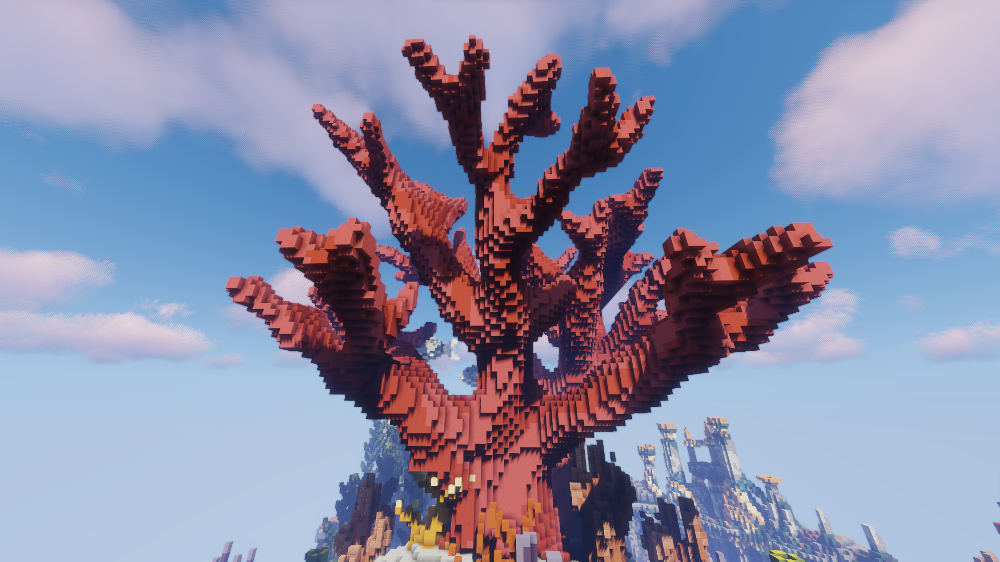
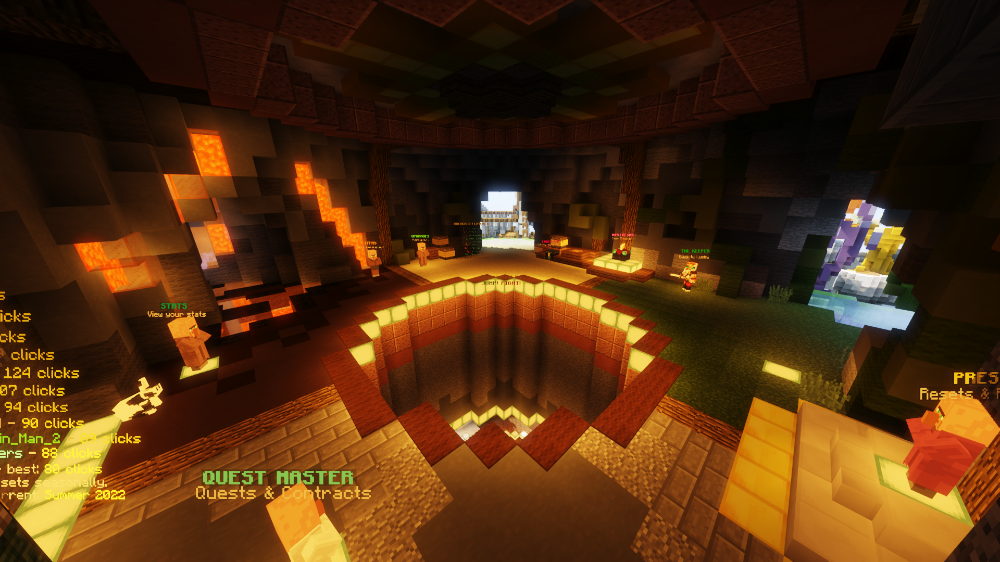
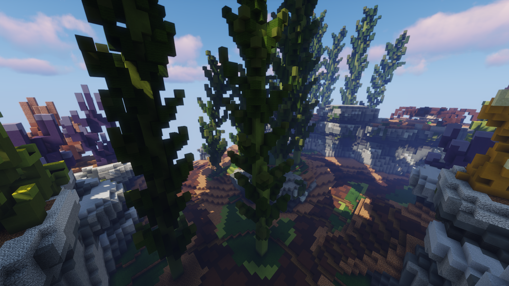
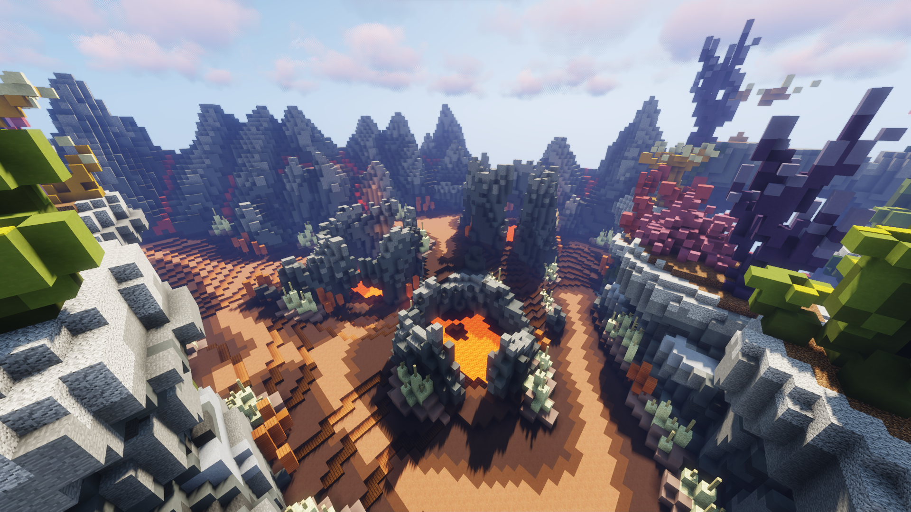
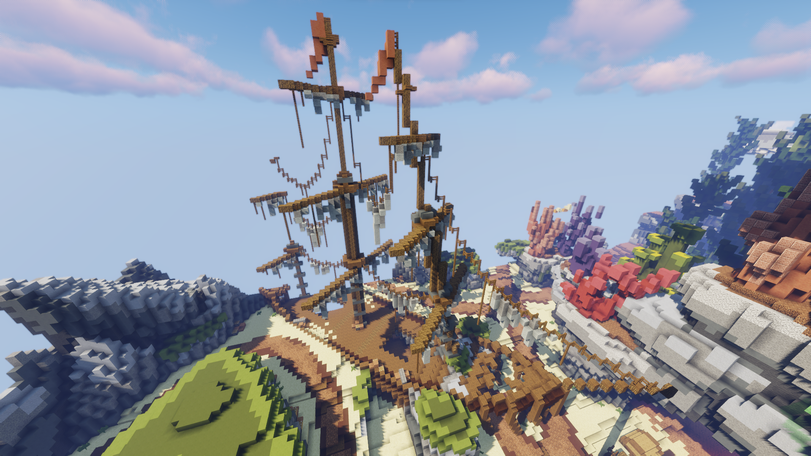

|  |
|  |
| Top to bottom: An image of the "tree" in the center of the map; the spawn of the Abyss map. |
From the Hypixel Pit Wiki
The Abyss, or Corals map, is a map in the Hypixel Pit. With its bright, colorful structures, it is one of the most diverse and vibrant maps in the game. It was the third map to be released, published on August 19th, 2018 in The Pit 0.3.8. The Abyss map appears after the Castle map and before the Genesis map in the map rotation.
The map has four quadrants; images of these are shown below.
Seaweed

Temple

Geyser

Shipwreck

Trivia
There are seven signs located around the map, each with one of the letters R, A, I, N, B, O, or W on them. However, in an update in January 2022, several barriers and blocks were added to the map, restricting access to several of the signs.